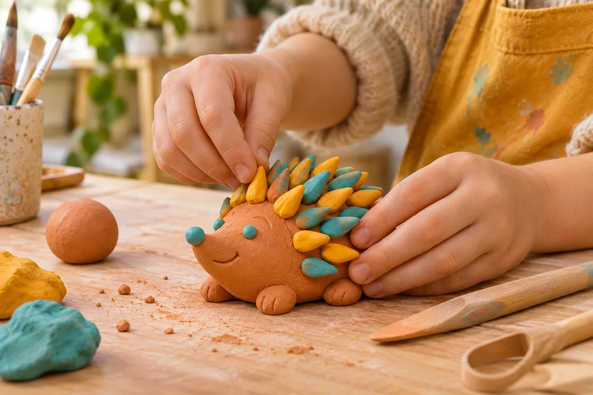
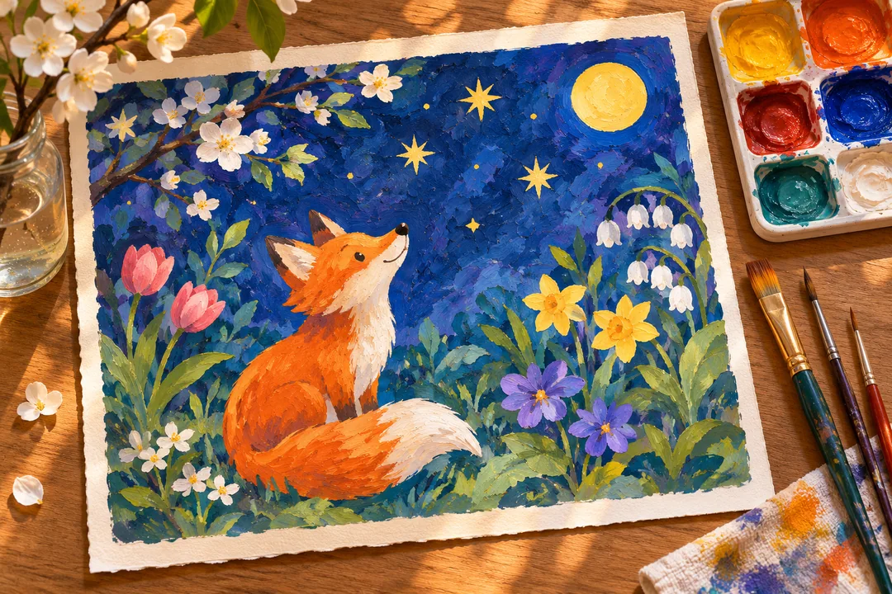
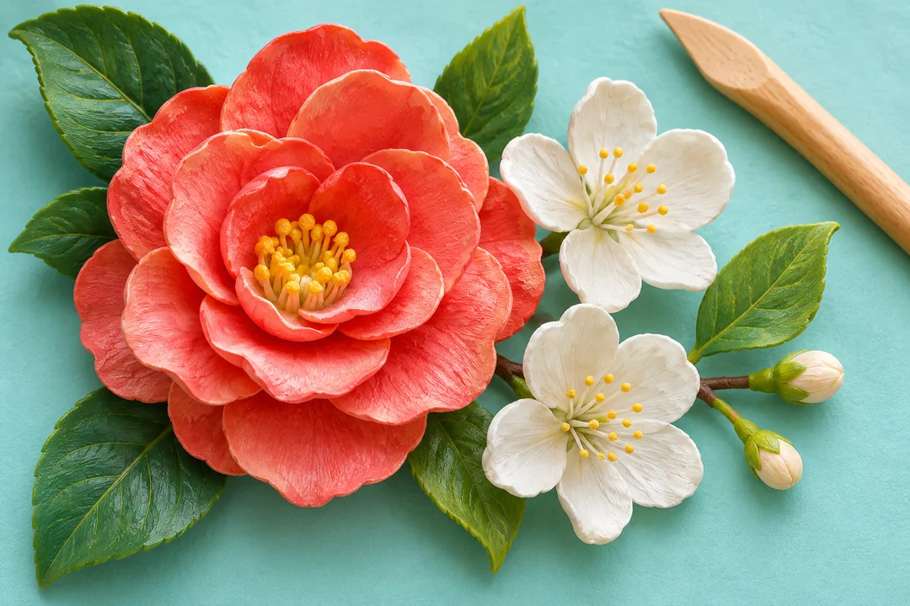

Детская лепка
Объёмные фигурки, простые формы и работа с фактурой.
Независимый дизайн-концепт. Фото сгенерированы для макета. Запись работает в демонстрационном режиме.
Официальный сайтЛепка и креативное рисование для детей 4–12 лет. От 9 лет и для взрослых — цветы из полимерной глины.


Объёмные фигурки, простые формы и работа с фактурой.

Знакомство с цветом и композицией через небольшие творческие проекты.

Реалистичные цветы из полимерной глины. Для участников от 9 лет и взрослых.
Знакомство с форматом и материалами перед регулярными занятиями.
Формат, в котором тему и темп можно согласовать с педагогом.
Творческое занятие для группы на площадке организатора.
Темы работ и возрастные подборки ниже показывают, как можно оформить программу. Расписание и цены уточняйте на официальном сайте студии.
Сгенерированные иллюстрации показывают возможные результаты и атмосферу.
Показано 12 из 12
4–6 лет
4–6 лет · Пример проекта — небольшая фигурка с простыми деталями из цветной глины.
4–6 лет
4–6 лет · Пример проекта — красочная картинка из крупных форм.
4–6 лет
4–6 лет · Знакомство с новым материалом и готовая работа за встречу.
7–8 лет
7–8 лет · Пример проекта — фигурка животного с характерными деталями.
7–8 лет
7–8 лет · Пример проекта — цветной сюжет с объёмом и тенью.
7–8 лет
7–8 лет · Один самостоятельный проект с подсказками педагога.
9–12 лет
9–12 лет · Пример проекта — композиция из нескольких фигур.
9–12 лет
9–12 лет · Цвет, планирование сюжета и работа с несколькими оттенками.
9–12 лет
От 9 лет · Знакомство с приёмами лепки лепестков и листьев.
Другие форматы
От 9 лет и взрослые · Цветы из полимерной глины с передачей формы и текстуры.
Другие форматы
Выбор темы и работа в своём темпе с преподавателем.
Другие форматы
Групповое творческое занятие на площадке организатора.
Уточните наличие мест и время пробного занятия на официальном сайте «Камелии».
На официальном сайте указаны занятия лепкой и рисованием для детей 4–12 лет. Керамическая флористика доступна от 9 лет.
Студия указывает, что предоставляет инструменты и основные материалы для занятий.
В студии доступны разовые занятия и индивидуальные уроки. Для актуальных условий откройте официальный сайт.
Бот подберёт пример занятия по возрасту и покажет путь до демозаписи.